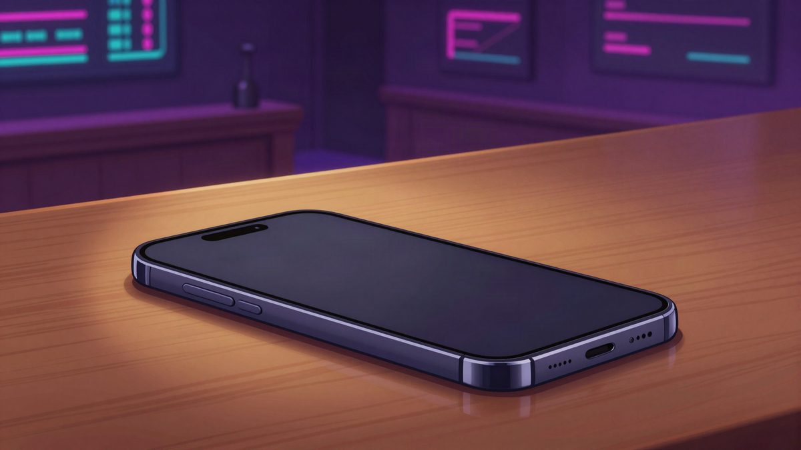
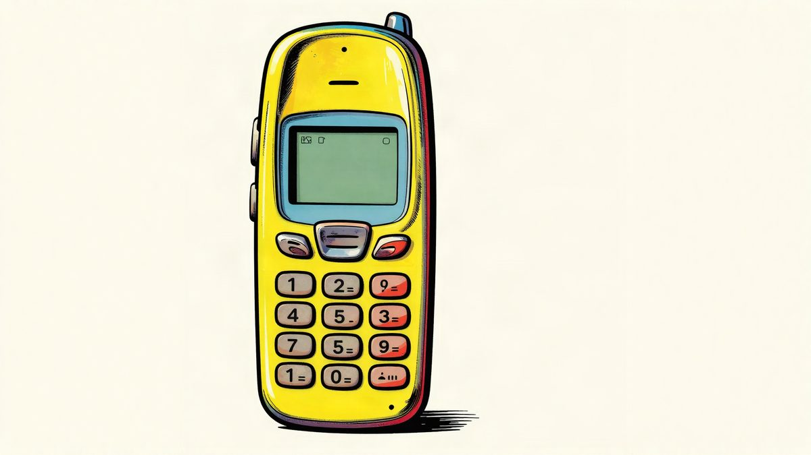

Meta i TikTok navodno su potajno isplatile milijune eura tinejdžerima da slučajevi ne dođu pred sud

Prema Bloombergu, Meta i TikTok isplatili su dvanaestero tinejdžera izvansudskim nagodbama, većinom oko 1,8 do 2,3 milijuna eura po osobi. Protiv društvenih mreža unatoč tome je i dalje otvoreno gotovo 10.000 tužbi.
Meta i TikTok potajno su isplatile dvanaestero tinejdžera koji su ih tužili zbog štete od društvenih mreža, piše Bloomberg pozivajući se na izvore upoznate sa slučajevima. Većina nagodbi iznosila je od 2 do 2,5 milijuna dolara (oko 1,8 do 2,3 milijuna eura) po osobi. Cilj je navodno bio spriječiti da se tvrdnje tužitelja iznesu pred javnošću.
Tužitelji tvrde da su im društvene mreže uzrokovale depresiju, samoozljeđivanje, poremećaje prehrane i anksioznost. Meta je, prema Bloombergovim izvorima, samo dvoje tinejdžera isplatila ukupno 7 milijuna dolara (oko 6,4 milijuna eura).
Otvoreno gotovo 10.000 tužbi
Stručnjaci te isplate vide kao pokušaj da se odvrate drugi potencijalni tužitelji. Prema Bloombergu, taj pokušaj ne uspijeva. Na državnim i saveznim sudovima u SAD-u trenutačno je u tijeku gotovo 10.000 tužbi za osobne ozljede protiv Mete, YouTubea, Snapchata i TikToka. Pokrenute su nakon prijelomnih suđenja koja su otvorila put novim slučajevima.
Više od 1.000 školskih okruga također tuži društvene mreže. Tvrde da su štetile učenicima i stavljale profit ispred sigurnosti maloljetnih korisnika.
Bloomberg procjenjuje da bi ukupna odgovornost tih kompanija mogla doseći gotovo 400 milijardi dolara (oko 370 milijardi eura).
Odvjetnik: ponudu nije bilo moguće odbiti
Mark Lanier, odvjetnik koji zastupa dvoje tinejdžera iz tih nagodbi, rekao je Bloombergu da su njegovi klijenti dobili ponudu koju nisu mogli odbiti. Dodao je da to nisu beznačajni iznosi. Prema njegovu mišljenju, to su prve nagodbe u nizu sličnih koje tek slijede.
Izvor: Futurism
Povezani članci
- MrBeast na videima gubi oko 72 milijuna eura, a zarađuje na čokoladi Feastables4. studenoga 2026.
 Mark Cuban tvrdi da Facebook prikazuje deepfake oglase s njegovim licem, a Meta navodno zarađuje 16 milijardi dolara na prijevarama6. studenoga 2026.
Mark Cuban tvrdi da Facebook prikazuje deepfake oglase s njegovim licem, a Meta navodno zarađuje 16 milijardi dolara na prijevarama6. studenoga 2026.
KDDI je predstavio Infobar Zero: telefon bez web preglednika i društvenih mreža za oko 190 eura18. studenoga 2026.